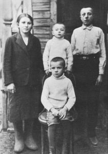
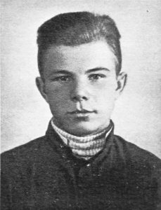
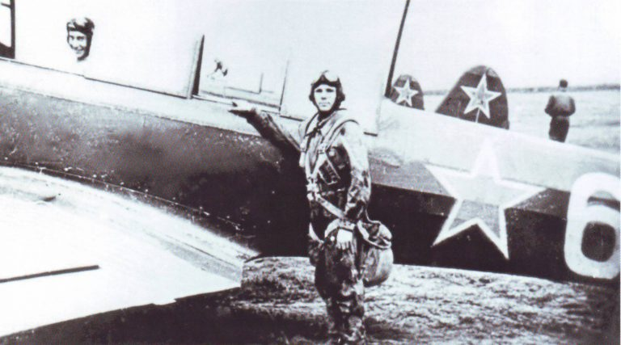
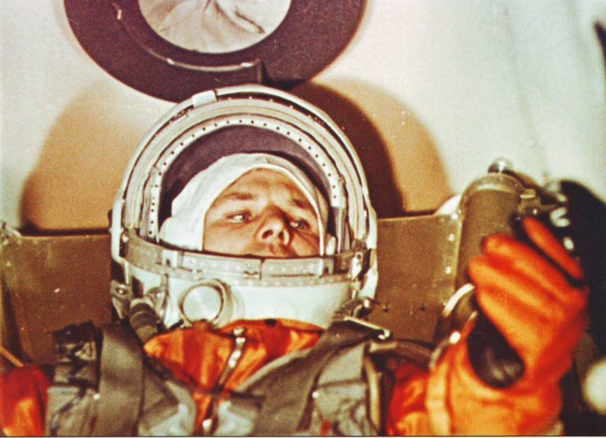
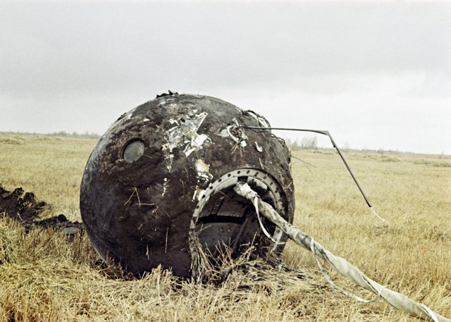

Гагарин родился в семье колхозника 9 марта 1934 года, в деревне Клушино Гжатского района Смоленской области. Поговаривают, что на самом деле будущий космонавт появился на свет 8 марта, но отец попросил исправить документы, чтобы сын не мучился, совмещая два праздника. Часто биографы пытаются создать впечатление, будто родная деревня Юрия была глухой дырой, чтобы подчеркнуть, что даже «самородок из глубинки» может в одночасье покорить весь мир. Но малая родина будущего космонавта была не такой уж глухоманью. Гжатск находится недалеко от Москвы, а через Клушино проходил оживлённый Тверской тракт.
Семья Гагариных (помимо Юрия, у них было ещё трое детей) жила в добротном крестьянском доме и не бедствовала даже после коллективизации — им удалось сохранить в личном пользовании немало скотины. Отец Алексей Иванович работал на мельнице, мать Анна Тимофеевна была дояркой, позже — заведующей скотофермой. Размеренную жизнь Гагариных нарушила война. 1 сентября 1941 года Юра пошёл в школу, а через месяц Клушино уже заняли немецкие войска.
Войну Гагарины перенесли тяжело. Даже когда в марте 1943 года Гжатский район был освобождён, легче не стало. Отступая, гитлеровцы сожгли большинство домов и угнали на работы молодёжь, в том числе брата и сестру Юрия. К счастью, в 1945-м советские войска освободили Гагариных, и они смогли вернуться домой.
После освобождения семья жила бедно — отец был занят на восстановлении села, старшие дети ещё не вернулись, и Юра, которому было всего девять лет, помогал маме по хозяйству. Параллельно он пытался учиться — хотя школу сожгли, деревенские дети занимались с учительницей в обычной избе. Вместо тетрадей писали на немецких листовках, счётные палочки заменили гильзами, а буквари — уставом РККА. В конце 1945 года семья, чтобы как-то выжить, решила перебраться в Гжатск. Юрий пошёл в третий класс местной школы.
Будущий космонавт проявлял завидное упорство и желание учиться, интересовался всем на свете и быстро нагнал одноклассников. И с физическим развитием у Юры всё было в порядке — например, он победил в турнире по подтягиваниям на турнике. В шестом классе учитель физики Лев Беспалов, завоевавший расположение ребят научными фокусами, познакомил учеников с работами Циолковского — и Юра заинтересовался ракетной техникой.
После шестого класса обучение прервалось: надо было кормить семью. Юрий уехал в Москву, а затем в Саратов, чтобы освоить дефицитную профессию мастера-литейщика. Не освоил, зато нашёл свою подлинную страсть. Небо.
Быт в Саратовском техникуме оказался суровым — жить приходилось в одной комнате на тридцатерых, ученики часто дрались с местными хулиганами. Но Юра активно учился, читал всё подряд, играл на трубе, стал капитаном баскетбольной команды (несмотря на невысокий рост), записался в физикотехнический кружок, где вновь увлёкся идеями Циолковского. Параллельно молодой литейщик стал интересоваться авиацией. В октябре 1954 года Гагарин твёрдо решил стать лётчиком и записался в Саратовский аэроклуб. Там он быстро освоил теорию и получил допуск к лёгкому учебному самолёту Як-18.
Через год военкомат направил Юрия в Первое Чкаловское военное училище лётчиков (ныне — Оренбургское высшее военное авиационное училище имени Полбина). Новоиспечённому курсанту повезло: на вооружение принимался новый реактивный истребитель-перехватчик МиГ-15бис, под него срочно требовались пилоты. Юрий прошёл ускоренную подготовку, став офицером раньше положенного срока.
Не обошлось без проблем. Из-за невысокого роста Гагарин с трудом видел землю при посадке и допускал ошибки, грозившие отчислением. Старшие офицеры, видя его огромное желание летать, помогли молодому лётчику: по совету инструктора Юрий стал подкладывать на кресло подушку. Вскоре Юрий получил право на самостоятельные полёты и окончил училище с отличием, благодаря чему смог самостоятельно выбрать место дальнейшей службы.
И тут ярко проявилась черта характера Гагарина, которая впоследствии сыграла решающую роль, когда выбирали первого космонавта. Он не избегал трудностей и ставил себе сложные цели. Вместо того чтобы выбрать, к примеру, Крым, Юрий отправился служить в суровое Заполярье — Луостари-Новое Мурманской области, недалеко от норвежской границы.
Примерно в то же время был запущены первый искусственный спутник Земли и космический аппарат с собакой Лайкой. Эти события произвели огромное впечатление на лётчика. Юрий и его друзья наизусть выучили параметры полёта, спорили, когда в космос полетит человек (они думали, что лет через десять), представляли, каким будет его корабль. Гагарин догадывался, что если где-то строят пилотируемые космические корабли, то готовят и пилотов для них. Но молодому лётчику не хватало смелости выяснить, к кому обратиться с этим вопросом.
Лишь в начале октября 1959-го, когда аппарат «Луна-2» достиг ночного светила, Юрий подал рапорт на имя командира полка с просьбой направить его на «специальную подготовку». И письмо дошло до нужных людей! В полк приехала военная комиссия, которая должна была отобрать кандидатов для особого задания.
Перед пилотируемым полётом ракетчики запустили два корабля «Восток» в беспилотном режиме. На борту находились собаки и манекен в скафандре, прозванный «Иваном Ивановичем». Оба запуска прошли почти идеально, а вот спускаемые аппараты промазали с приземлением, перелетев расчётное место на пару сотен километров. Быстро установить причину сбоя в программе не вышло, и Королёв пошёл на осознанный риск, назначив старт космонавта на первую половину апреля. В ожидании полёта космонавты занимались спортом и смотрели фильмы, включая недавно вышедшую комедию «Осторожно, бабушка!» с Фаиной Раневской. Просмотр этой картины перед полётом стал традицией космонавтов, пока её не сменил вышедший в 1973 году фильм «Белое солнце пустыни».
Рано утром 12 апреля Юрий Гагарин и Герман Титов, назначенный его дублёром, надели скафандры. И обнаружили, что на них нет упоминания СССР. Чтобы лётчиков после приземления не приняли за инопланетян или шпионов, один из специалистов от руки написал «СССР» на шлемах. По дороге к ракете Гагарин попросил остановиться, вышел из автобуса и помочился на заднее колесо. Не потому, что забыл сходить в туалет, — нет, это была старая традиция военных лётчиков. Теперь она стала и традицией космонавтов.
На стартовой позиции Юрий попрощался с сопровождающими. Специалисты помогли ему подняться по лестнице к лифту и забраться в кабину корабля. В ней Гагарин провёл ещё два часа, дожидаясь, пока ракету подготовят к запуску.
В 9:07 ракета оторвалась от стартовой площадки и начала медленно подниматься в небо. И тут Юрий Гагарин, вспомнив о тренировках в Жуковском, воскликнул: «Поехали!» Это слово вошло в историю.
Во время полёта Гагарин поддерживал связь с Землёй, записывал свои ощущения. Он восхищался красотой Земли и не скрывал восторгов. Также он пообедал (в меню были щавелевое пюре с мясом, паштет и шоколадный соус), убедившись, что питание в невесомости не вызывает трудностей.
Совершив один оборот вокруг Земли, «Восток» начал процедуру возвращения. И тут не обошлось без проблем — тормозной двигатель выключился на секунду раньше положенного. Нарушилась программа спуска, и приборы на борту сошли с ума. «Восток» начал падать в атмосферу, беспорядочно кувыркаясь. Гагарин, позже назвавший это «кордебалетом», не растерялся, а с интересом следил за ситуацией, пытаясь понять, почему система не отделяет посадочный отсек от двигательного. Лишь спустя одиннадцать минут, когда части корабля разделились от нагрева, спускаемый аппарат выровнялся в потоках набегающего воздуха.
Незадолго до приземления отстрелилась крышка люка, и кресло с космонавтом катапультировалось. При этом оторвался контейнер с аварийным запасом. Из-за этого не заработал радиомаяк, а Гагарин лишился припасов, аптечки, радиостанции, пеленгатора и надувной лодки, которая могла пригодиться при посадке на воду.
Тем не менее космонавт благополучно достиг земли. Расчётное место приземления находилось рядом с городом Хвалынск, на границе Саратовской и Куйбышевской областей. Но «Восток», вопреки ожиданиям, спустился не с перелётом, а с недолётом — у деревни Смеловка Саратовской области (сейчас в этом месте установлен памятник). Там космонавта, естественно, никто не встречал. Он самостоятельно избавился от парашюта и отправился искать людей. Первыми встретились местные жители, которых напугал вид человека в странном костюме. Но Юрий быстро объяснил, что он свой.
В Москве его встречала толпа восторженных людей, руководители космической программы и Герман Титов. Юрий Гагарин стал знаменитостью.